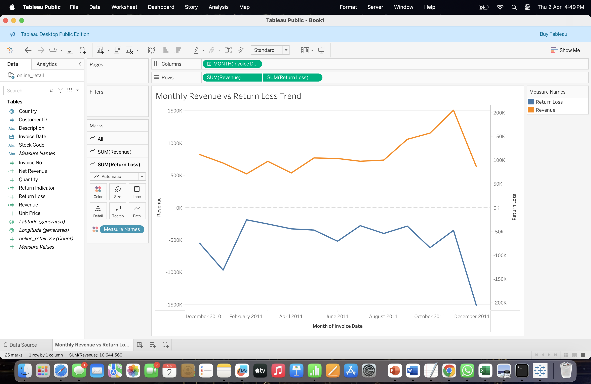
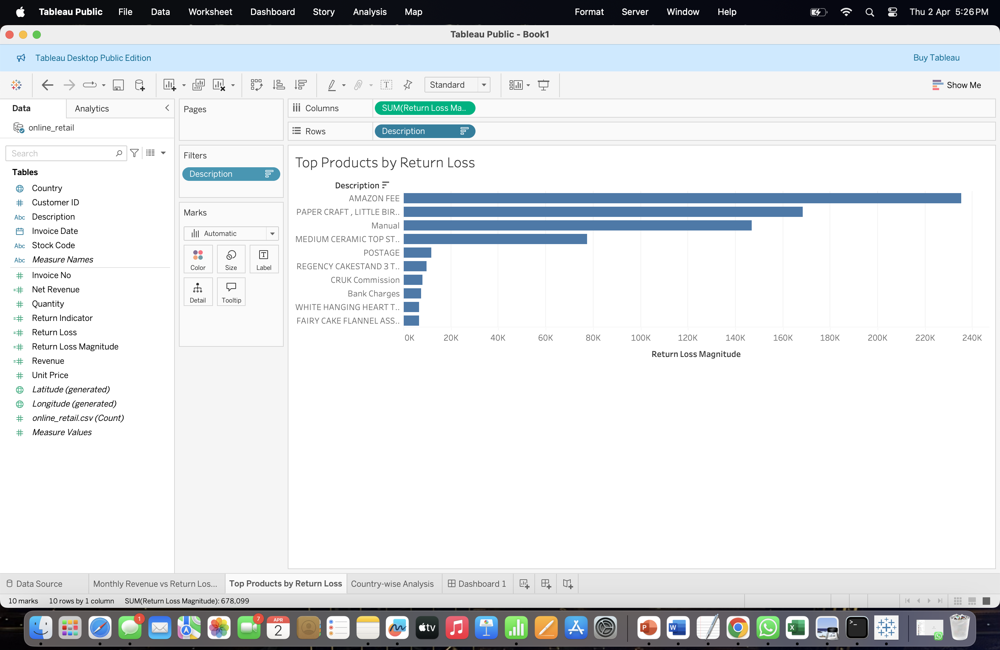
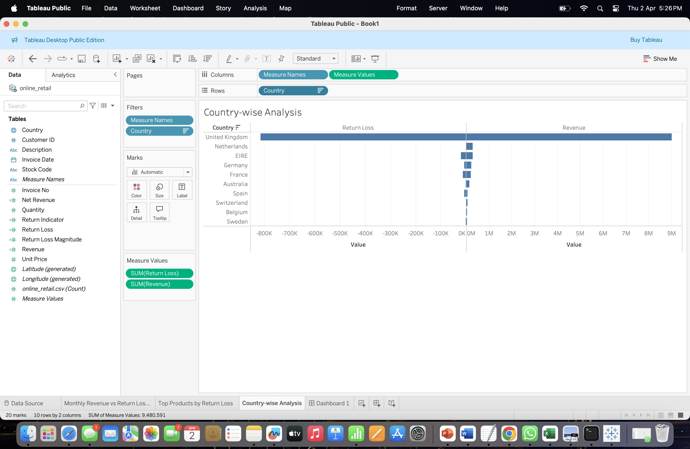
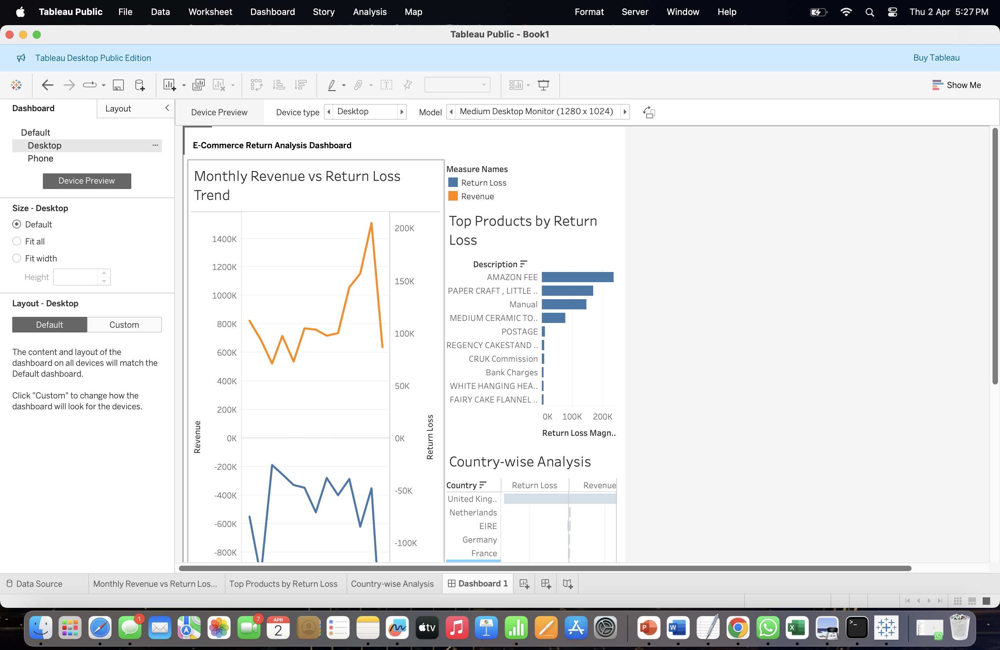

Project Overview
In online retail platforms, product returns create hidden financial and operational challenges. Even when sales look strong, frequent returns can reduce actual net revenue and affect inventory, customer satisfaction, and decision-making. Our project focuses on identifying return patterns and measuring their business impact using visual analytics.
Goal 1
Identify return patterns across time, products, and countries.
Goal 2
Measure revenue impact caused by return-related transactions.
Goal 3
Build a dashboard that communicates insights clearly and effectively.
Dataset Used
We used the Online Retail dataset, which contains real transactional records from an e-commerce business. The dataset includes invoice information, product details, quantities, prices, timestamps, customer identifiers, and country information.
Main Fields
- Invoice Number
- Stock Code
- Description
- Quantity
- Invoice Date
- Unit Price
- Customer ID
- Country
Calculated Fields
- Revenue
- Return Indicator
- Return Loss
- Net Revenue
- Return Loss Magnitude
Methodology
The dataset was imported into Tableau, and calculated fields were created to support analysis. Time-based aggregation was used for monthly trends, while grouping by product description and country helped identify the highest-impact products and regions.
Step 1: Data Import
Uploaded the CSV dataset directly into Tableau and verified field types.
Step 2: Field Creation
Created Revenue, Return Loss, Return Indicator, and Return Loss Magnitude using calculated fields.
Step 3: Visual Analysis
Built trend charts, top product analysis, and country comparison visualizations.
Step 4: Dashboard Design
Combined all worksheets into one dashboard for easier interpretation of results.
Visualizations
Screenshots are loaded from the images/ folder. Make sure your files are named exactly as below.
- images/monthly-trend.png
- images/top-products.png
- images/country-analysis.png
- images/dashboard.png

Monthly Revenue vs Return Loss
This line chart compares revenue and return-related loss over time and helps identify fluctuations and seasonal patterns.

Top Products by Return Loss
This bar chart highlights the products contributing most to return-related losses.

Country-wise Analysis
This chart compares revenue and return loss across top countries to show geographic variation.

Integrated Dashboard
The dashboard combines all key visualizations into a single interactive interface.
Key Findings
Revenue Impact
Returns reduce actual business performance and can noticeably affect monthly net revenue.
Product-Level Insight
Some products contribute disproportionately to return loss and may require better quality control or listing improvements.
Country-Level Insight
The United Kingdom shows the highest sales activity and also a high level of return-related loss.
Team
Sadvik Kondadi
Project coordination, Tableau analysis, chart development, dashboard design, and documentation.
Ashish Kommanaveni
Support for analysis planning, validation of findings, and report contribution.
Sai Rathan Perala
Support for data interpretation, dashboard review, and project write-up collaboration.
Conclusion
This project demonstrates how visual analytics can be used to study product return behavior and its financial impact in e-commerce. By comparing revenue, return loss, products, and countries, we were able to build a meaningful dashboard that supports data-driven understanding of return-related risk.